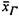
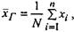
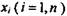
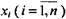
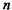

Середнє значення
Середнє значення - це числова характеристика положення центру розподілу деякої вибіркової сукупності.
Якщо Ви хочете підрахувати середній бал останніх 10 екзаменаційних оцінок, Ви просто додасте їх та ділите на 10.
Простою арифметичною (середньоарифметичною) генеральної сукупності називають суму варіант, поділену на об'єм генеральної сукупності. її позначають
 (1)
де - варіанти генеральної сукупності,
Пам'ятай: Середнє значення генеральної сукупності є параметр.
Якщо генеральна сукупність дуже велика за обсягом, то знайти її середнє значення досить громіздка процедура. Альтернативний варіант полягає в обчисленні числових характеристик за даними, що знаходяться у вибірці.
Пам'ятай: Проста середня вибірки, х, є статистика. Вона знаходиться за формулою
 (2) де
(2) де
- варіанти вибірки,- об'єм вибірки.